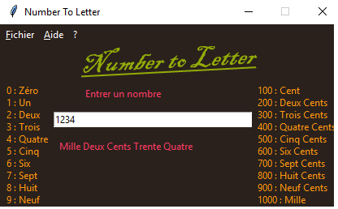
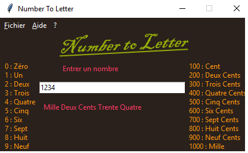

Kosga
Produits Kosga
Sommaire:
1. Number to Letters
Number to Letter, comme son nom le suppose est un logiciel qui permet de faire la correspondance entre un nombre en chiffre et en lettre. L'utilisation de ce logiciel est intuitif. Vous entrer un nombre dans le rectangle blanc, au fur et àmesur que vous entrer un nombre, la correspondance en lettre est affichée.Je l'ai écris en python; ce langage de script est très étonnant, surtout pour ceux qui on a fait du c avant de l'apprendre.
 

La première image est celle de Number to Letter au démarrage et la deuxième est ce que retourne Number to Letter quand je tappe 1234. Vous pouvez télecharger Number to Letter pour windows et pour Linux.
2. Démineur
Hommage aux années 1960 où le premier ancêtre de Le Drageur de Mines (Minesweeper) fait son apparition, crée par Jérimac Ratlif. Ce jeu est un classique de l'univers du jeu video.
Ce casse tête vous met dans la peau d'un démineur qui doit repérer toutes les mines sans en toucher un seul. Une fois que le joueur a identifié toutes les cases ne contenant pas de mines, il gagne. Mais si il clique sur une mine, Boom il est mort.


Pour les intéressés, voici une version à moi que j'ai réalisé en C, sous linux. Donc désolé pour les utilisateurs Windows, y'en a que pour Linux. Bien, le voici